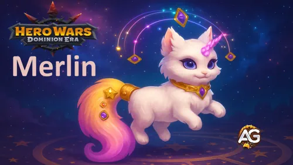
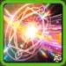
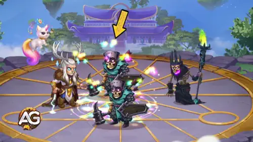
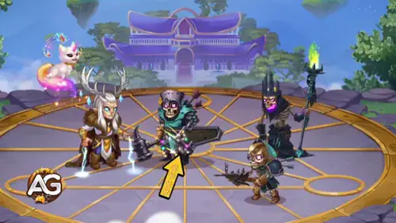
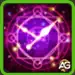

Descubra tudo sobre o mascote Merlin em Hero Wars: Dominion Era. Este guia completo cobre os atributos máximos de Merlin, suas habilidades e estratégias de equipe ideais para dominar as batalhas.

Guia do Mascote Merlin - Hero Wars: Dominion Era, um jogo desenvolvido pela Nexters.
Quem é o Mascote Merlin?
O mascote Merlin é um dos mais poderosos companheiros mágicos em Hero Wars: Dominion Era, conhecido por sua excepcional Penetração Mágica e Poder de Habilidade, capazes de mudar o rumo de uma batalha.
Classe: Mascote Mágico
Posição: Suporte na retaguarda
Atributo Principal: Penetração Mágica (47.911 no nível máximo)
Com um poder máximo de 181.943, Merlin se destaca como um dos mascotes de nível mais alto do jogo. Seu impressionante Poder de Habilidade (12.360) e Poder de Padrinho (11.064) o tornam especialmente valioso para equipes baseadas em magia.
Este guia explorará as habilidades de Merlin, as combinações ideais de heróis e estratégias para maximizar seu potencial tanto em batalhas PvE quanto PvP.
Prós e Contras do Mascote Merlin - Hero Wars: Web e Facebook
✅ Prós
Grande Impulso Mágico: Com 47.911 de Penetração Mágica e 12.360 de Poder de Habilidade no nível máximo, Merlin destrói as defesas inimigas
Controle de Área: Sua habilidade Magnus Magica! cria uma zona de dano persistente que continua prejudicando os inimigos mesmo após o lançamento
Sinergia com Equipes Mágicas: A habilidade Phobia de Magica! reduz a defesa mágica inimiga, amplificando o dano de todos os aliados mágicos
Bônus de Velocidade:Tempus Magica! aumenta significativamente a velocidade de ativação de habilidades dos heróis mágicos apadrinhados
Padrinho Versátil: Funciona com 18 heróis mágicos diferentes, incluindo opções de elite como Orion, Satori e Lars/Krista
Segurança na Retaguarda: Como mascote de suporte, Merlin permanece protegido atrás do tanque enquanto causa dano
❌ Contras
Apenas para Magia: Inútil com causadores de dano físico, limitando as opções de composição da equipe
Dependente de Posição:Magnus Magica! atinge apenas inimigos da linha de frente, não alcançando ameaças na retaguarda
Alto Investimento: Requer recursos significativos para alcançar seus poderosos atributos máximos (181.943 de poder)
Sensível ao Tempo: A zona de distorção dura apenas 5 segundos – os inimigos podem sair dela
Contra-atacável: Equipes com defesa mágica ou heróis como Cornelius podem neutralizar sua eficácia
Limitação de Padrinho: Apesar de versátil, só beneficia heróis mágicos específicos (não todos os usuários de magia)
Habilidades do Mascote Merlin Explicadas - Hero Wars: Dominion Era
Aprenda como as habilidades mágicas de Merlin funcionam em batalha e como usá-las de forma eficaz para derrotar seus inimigos.
Habilidades Ativas do Mascote Merlin

Magnus Magica!
O ataque principal de Merlin cria um círculo mágico roxo no chão que dura 5 segundos. Inimigos que permanecerem nesse círculo recebem dano contínuo adicional.

Habilidade Magnus Magica, Hero Wars Dominion Era.
Dicas: Esta habilidade funciona melhor contra grupos de inimigos. Para obter o máximo efeito, combine Merlin com heróis que ataquem inimigos na linha de frente (como Aurora ou Orion) para manter mais alvos dentro da zona de dano.
Phobia de Magica!
Merlin enfraquece a defesa mágica do inimigo mais próximo, fazendo com que ele receba mais dano de todos os ataques mágicos (não apenas os de Merlin).

Habilidade Phobia de Magica, Hero Wars Dominion Era.
Dicas: É especialmente poderosa quando combinada com outros heróis mágicos. O inimigo na linha de frente (geralmente o tanque) será frequentemente o alvo, tornando todos os ataques mágicos da sua equipe mais fortes contra ele.
Habilidade de Patronagem do Mascote Merlin

Tempus Magica!
Quando atribuído a um herói, Merlin faz com que as habilidades mágicas dele sejam ativadas mais rapidamente. Isso significa que o herói pode atacar com mais frequência durante a batalha.
Dicas: Melhor usado com heróis que têm ataques mágicos poderosos, mas lentos. O aumento de velocidade pode ajudá-los a lançar seus ataques mais fortes antes que o inimigo possa reagir.
Lista de Patronagem de Merlin - Hero Wars: Dominion Era
Merlin fortalece heróis mágicos com aumento na velocidade das habilidades e nos atributos mágicos. Abaixo está a lista completa de heróis que se beneficiam da patronagem de Merlin nas batalhas.
Benefícios da Patronagem
Bônus de Atributos de Merlin: Ataque Mágico e Penetração Mágica Tempus Magica! Aumenta a velocidade das habilidades mágicas do mestre em até 50% (com base no Poder de Patronagem)
Conclusão: Mascote Merlin em Hero Wars: Dominion Era (Web & Facebook)
O mascote Merlin é um dos companheiros mais poderosos voltados para magia em Hero Wars: Dominion Era, sendo particularmente valioso para jogadores que focam em composições de equipe baseadas em magia. Sua combinação única de dano em área, penetração mágica e aceleração de habilidades o torna um divisor de águas contra equipes focadas em defesa física. A capacidade de fortalecer diversos heróis mágicos de elite por meio de seu sistema de patronagem adiciona enorme versatilidade a várias estratégias de fim de jogo.
No entanto, a eficácia de Merlin vem acompanhada de limitações importantes que os jogadores devem considerar antes de investir pesado. Seu foco exclusivo em magia significa que ele não traz valor para equipes de dano físico, e suas habilidades podem ser neutralizadas por especialistas em defesa mágica. O alto investimento de recursos necessário para maximizar seu potencial (atingindo 181.943 de poder) também faz dele uma aposta de longo prazo, e não uma solução para o início do jogo.
Para usuários de equipes mágicas que jogam na versão Web e Facebook, Merlin é, sem dúvida, um mascote de elite que vale a pena adquirir e evoluir, especialmente quando combinado com heróis como Orion, Satori ou os gêmeos Lars/Krista. Embora não seja tão universal quanto alguns mascotes, sua especialização em amplificação mágica cria algumas das combinações ofensivas mais devastadoras do jogo quando usado corretamente. Jogadores estratégicos descobrirão que o conjunto único de habilidades de Merlin pode dominar muitos cenários de batalha, especialmente na Guerra de Guildas e no ataque na Arena.
Sobre o autor
Alexandre Domingos é pós-graduado em Engenharia e Supervisor de Produção. Nas horas vagas, se aventura como youtuber e blogueiro no Alexandre Games, unindo sua paixão por tecnologia e estratégia com o mundo dos games. Desde os 5 anos mergulha nesse universo, jogando em plataformas clássicas como MSX, Master System, Nintendo e até em um velho PC 286.
Você gostou do nosso Guia do Pet Merlin para Hero Wars Web e Facebook? Há algo que não entendeu ou gostaria de sugerir mudanças? Convidamos você a se juntar à nossa sessão de comentários na página do Alexandre Games Blog. Não hesite em expressar sua opinião, clarificar suas dúvidas e compartilhar sua sugestões. Clique no botão abaixo para começar:


 Guia do Mascote Axel para Hero Wars: Dominion Era
Guia do Mascote Axel para Hero Wars: Dominion Era
 Guia do Mascote Biscuit para Hero Wars: Dominion Era
Guia do Mascote Biscuit para Hero Wars: Dominion Era
 Guia do Mascote Cain para Hero Wars: Dominion Era
Guia do Mascote Cain para Hero Wars: Dominion Era
 Guia do Mascote Fenris para Hero Wars: Dominion Era
Guia do Mascote Fenris para Hero Wars: Dominion Era Guia do Mascote Khorus – Hero Wars: Dominion Era | Atributos, Função e Como Usar
Guia do Mascote Khorus – Hero Wars: Dominion Era | Atributos, Função e Como Usar
 Guia do Mascote Oliver para Hero Wars: Dominion Era
Guia do Mascote Oliver para Hero Wars: Dominion Era